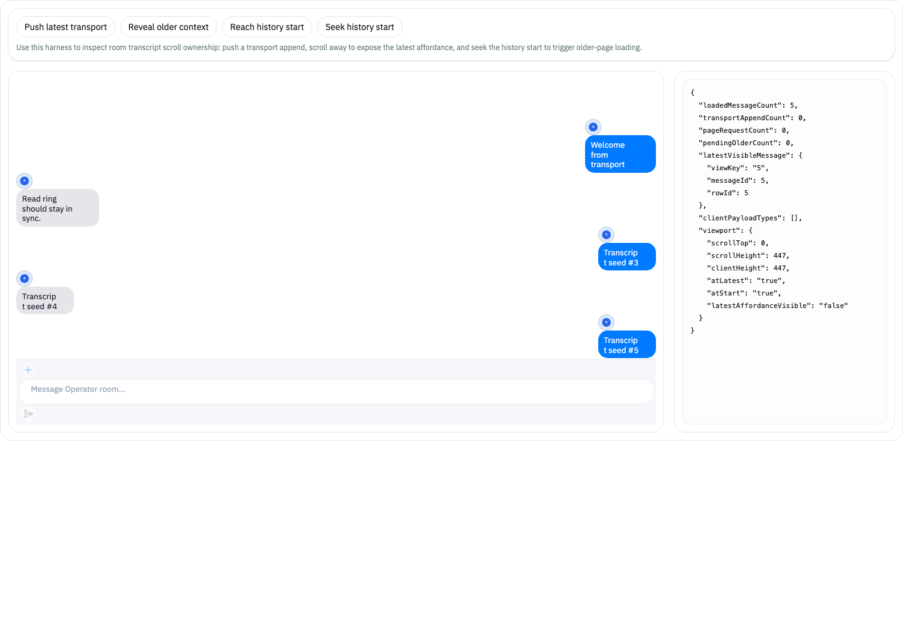
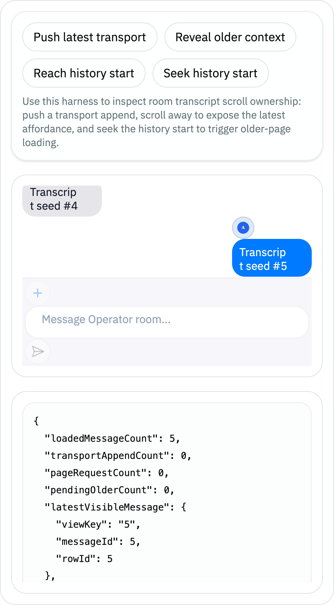

Studio Embedded Web Chat Style Review
The shared @agenter/web-chat-view package now owns avatar geometry through scoped Svelte CSS.
Studio embeds the component without route-local rescue CSS, and large avatar images stay bounded to
normal chat-row size.
Proof Summary
BDD
Source contract failed first, then passed after ChatAvatar stopped relying on host Tailwind utilities.
DOM
Storybook DOM contract passed 8 scenarios, including large embedded actor avatar images.
Visual
Desktop and iPhone 14 screenshots both measured the first five message avatars at 26x26.
Deviation
Evidence uses the embedded Storybook contract story, not a live backend-backed Studio route.
Intent Alignment
| Intent | Evidence | Verdict |
|---|---|---|
| Shared package owns avatar sizing and clipping. | chat-avatar.svelte scoped CSS; BDD source contract. |
Pass |
| Studio embed does not need emergency route CSS. | New Storybook contract passes through WebChatViewHost. |
Pass |
| Bottom-anchored transcript remains stable. | Row-size estimator adjusted after DOM contract exposed anchor drift. | Pass |
Screenshot Evidence

26x26.
Deviations And Questions
- Live Studio route screenshots are deferred; current evidence targets the reusable embedded surface directly.
- Storybook dev emitted a dependency pre-scan warning, while targeted DOM tests and iframe screenshots still succeeded.
- Future question: should this component eventually be isolated through iframe/custom element instead of direct Svelte embedding?